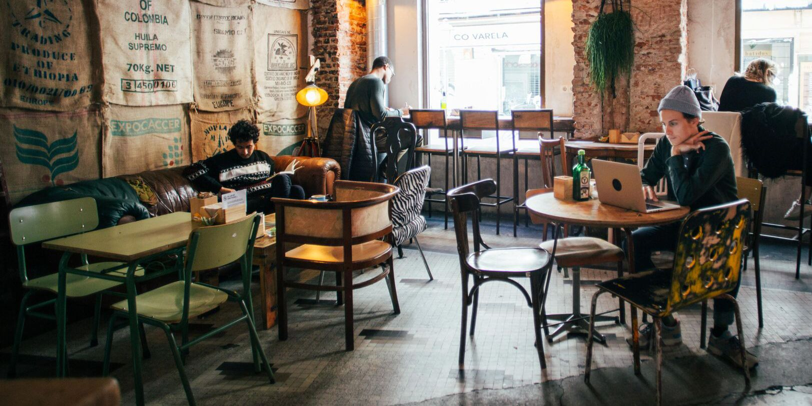
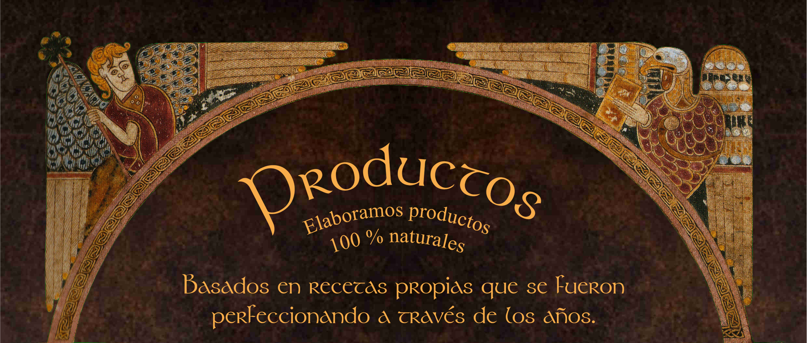

En nuestra cafetería creemos que el buen café no solo se saborea, se vive. Cada taza que servimos es una invitación a detenerte, a reconectar contigo mismo y con los demás. Somos un espacio acogedor donde cada detalle está pensado para que te sientas como en casa, desde la música suave de fondo hasta el aroma envolvente del café recién hecho. Aquí, cada bebida cuenta una historia: la de los granos seleccionados cuidadosamente, la de los métodos tradicionales que respetan el sabor original del café, y la del cariño con el que preparamos cada pedido. Apostamos por lo local, por lo auténtico, y por todo aquello que se hace con pasión y respeto por el proceso. Creemos en crear comunidad, en apoyar a pequeños productores y en ofrecerte una experiencia que va más allá de lo que hay en la taza. Ven a conocernos y descubre un lugar donde el tiempo se detiene, y el café, como los buenos momentos, se disfruta sin prisa.
Nuestros productos son 100% naturales, elaborados sin conservantes, aditivos ni procesos industriales. Cada ingrediente es cuidadosamente seleccionado para ofrecerte lo mejor de la naturaleza, respetando su sabor, frescura y calidad. Creemos en una forma más saludable y auténtica de disfrutar lo que comes y bebes, por eso nuestras recetas mantienen la esencia de lo simple y lo real. Disfruta de lo natural, como debe ser.
